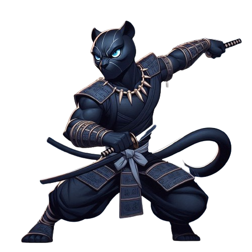
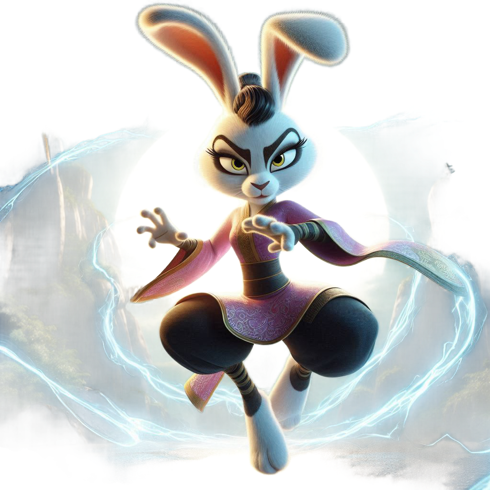
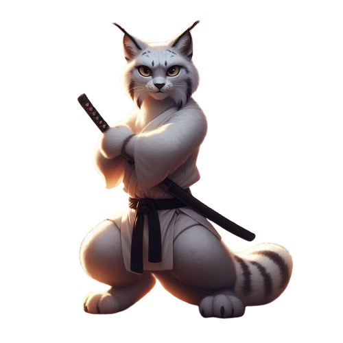
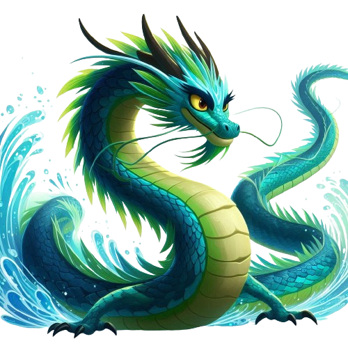
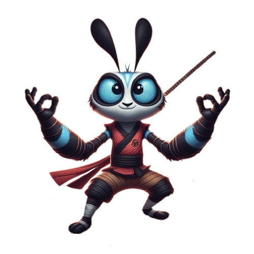
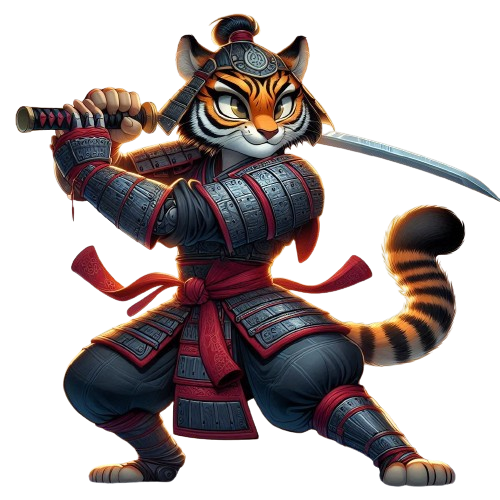

-
Zheng Xing
HP 1350
DESCRIÇÃO
Codinome: Zheng
Guilda: Xin Whung
Nascido em um pequeno vilarejo, que foi atacado pelos Whing Xan. Desde então busca vingança derrotando um a um da guilda inimiga.
Habilidade principal: Condena as almas dos seus inimigos.
Origem dos poderes: Teve um intenso treinamento de Kong Fu com um ancião que no final de seu treinamento teve um ritual no qual concedeu seus poderes.
-
Mei Lian
HP 1150
DESCRIÇÃO
Codinome: ML
Guilda: Vale da Paz
Mei é uma coelha da raça Mini Lion que cresceu no Vale da Paz.O sonho dela sempre foi se juntar aos 5 Furiosos. Seu melhor amigo de infância foi Po, que possuía o mesmo sonho que ela. Após muito esforço, se tornou integrante dos 5 Furiosos com seu melhor amigo. Ela era a única participante que possuía incríveis poderes de telecinese. ML era a integrante mais forte, inteligente e amigável do grupo, se tornando essencial para o combate de crimes. Porém, devido a ela revelar seu grande sonho de ser um Dragão Guerreiro, seus amigos acabaram entendendo que ela queria roubar o lugar de Po e foi expulsa pelo grupo. Após isso, a personagem decidiu revelar sua verdadeira natureza sombria, se tornou a vilã mais forte da China e acabou se aliando com Tai Lung, espalhando o terror pelo país.
Habilidade principal: Telecinese
Origem dos poderes: Mei Lian descobriu seus poderes atraés de uma meditação, ela é transportado para uma dimensão onde um ancião o ensina a dominar o poder da telecinese, um dom esquecido pela humanidade.
-
Ling
HP 1280
DESCRIÇÃO
Codinome: Ling
Guilda: Vila da Paz
Mei Ling, uma lince-das-neves das Montanhas Kunlun, desenvolveu um estilo de kung fu baseado na furtividade e agilidade para proteger sua vila de bandidos. Após derrotar os invasores, suas habilidades se tornaram lendárias. Ela se juntou a Po e os Cinco Furiosos, trazendo suas técnicas de combate silencioso e precisão para a equipe, enquanto busca proteger os outros e superar seus próprios desafios.
Habilidade principal: Habilidades lendárias dekong fu.
Origem dos poderes: após muito treino.
-
Long Wei
HP 1280
DESCRIÇÃO
Codinome: Wei
Guilda: Vila da Paz
Long Wei, um dragão-do-mar nascido no Lago do Dragão Esmeralda, decidiu explorar o mundo além de seu lar para ajudar os necessitados. Usando seus poderes de manipulação da água e seu estilo de kung fu fluído, ele se tornou um aliado poderoso. Long Wei se juntou a Po e aos Cinco Furiosos para proteger o Vale da Paz e enfrentar ameaças com suas habilidades místicas.
Habilidade principal: Manipulação da água
Origem dos poderes:após explorar o mundo e descobrir sozinho seus incríveis poderes.
-
LEAN
HP 1100
DESCRIÇÃO
Codinome:Grilo Sereno
Guilda: Vale da Paz
Lean é um jovem grilo impetuoso que chega à pacífica aldeia de Serenidade, famosa por suas habilidades em kung fu e por seu equilíbrio interior. Desejando se tornar um grande guerreiro, Lean é aceito pelo sábio mestre Shifu, mas enfrenta dificuldades devido à sua natureza descontrolada. Durante o treinamento, Lean descobre um pergaminho antigo sobre a técnica de kung fu chamada "A Dança da Serenidade", que exige um equilíbrio perfeito entre força e calma. Determinado a dominar a técnica, Lean mergulha em um profundo processo de autoconhecimento e prática, aprendendo a harmonizar sua energia com a tranquilidade necessária. Ao final, Lean se torna um mestre em "A Dança da Serenidade", compreendendo que o verdadeiro poder reside na combinação de força e serenidade, e encontra seu lugar como um guerreiro equilibrado e sábio na aldeia de Serenidade.
Habilidade principal: "A Dança da Serenidade", que exige um equilíbrio perfeito entre força e calma.
Origem dos poderes: Através de um pergaminho antigo sobre a técnica de dança kung fu.
-
Zarifa
HP 1280
DESCRIÇÃO
Codinome: Sugg
Guilda: Kaje-ninja-gun
Morava em um vilarejo nobre, onde passou por abusos durante sua adolescência realizado por homens causando um trauma enorme no seu futuro. Assim que completou 18 anos decidiu fugir buscando se tornar uma lutadora poderosa com suas garras enormes. Depois de muitos treinamentos Zarifa se tornou imortal com o poder de manipulação de causalidade, controlando toda causa e efeito das coisas, ou seja, permitindo decidir o que podia ou não acontecer, quando e como. Voltou para se vingar de cada um, seu plano era matar todos eles individualmente, fazendo eles passarem por cada sofrimento realizado na sua adolescência, deixando seu símbolo de força registrado na pele de cada homem.
Habilidade principal: Imunidade ao fogo.
Origem dos poderes:Através de um arduo treinamento de kung fu saiu em uma grande aventura na qual encontrou o pergaminho da chama eterna.